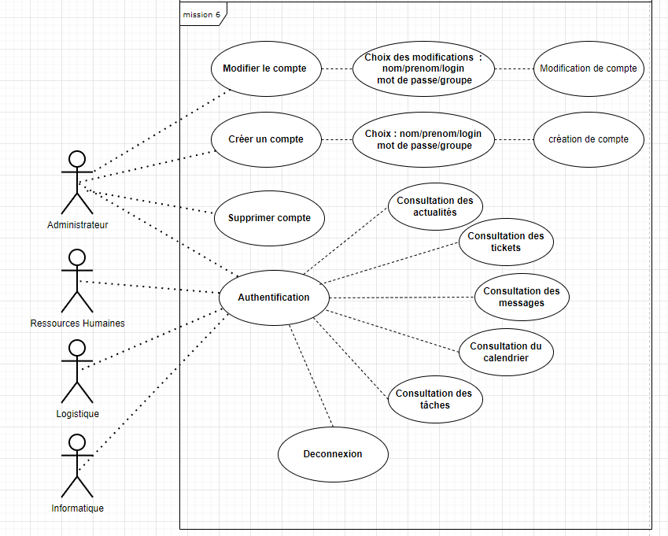
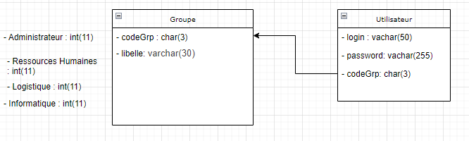
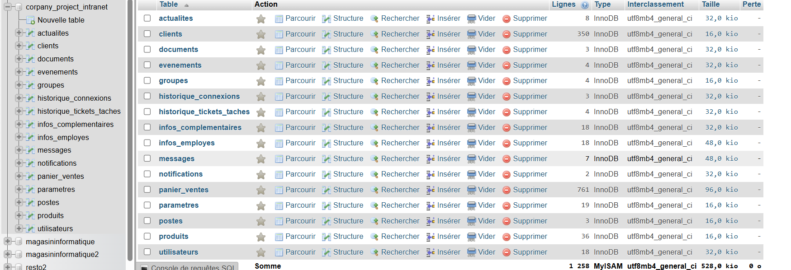
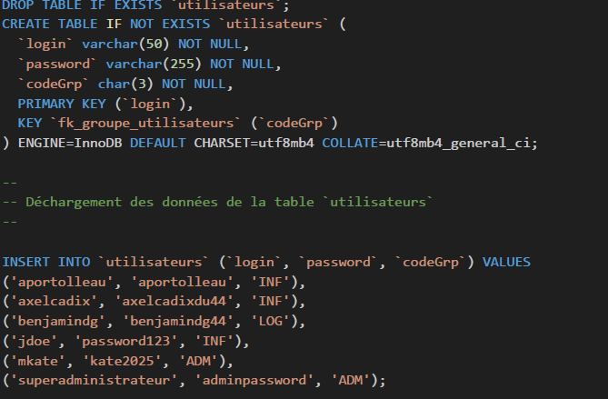

Consigne Etape 6
Voir compte Rendue
L'objectif de cette mission était de modéliser et structurer l'accès aux utilisateurs.
1. Modélisation UML des employés et des rôles
Une représentation UML a été réalisée pour détailler les différentes fonctionnalités accessibles en fonction des rôles :
- Administrateur : Gestion complète des utilisateurs et accès à toutes les fonctionnalités.
- Ressources Humaines : Accès limité aux fonctionnalités, sans consultation des tickets des autres utilisateurs.
- Logistique : Consultation des tickets des autres utilisateurs avec les administrateurs.

2. Modélisation UML de la relation Utilisateur-Groupe
Un diagramme UML illustre la relation entre un utilisateur et un groupe :
- Chaque utilisateur possède un identifiant et un mot de passe.
- Un CodeGrp permet d’attribuer un rôle (ex. ADM pour Administrateur).
- La table des utilisateurs est liée à la table des groupes, qui définit les rôles accessibles.

3. Création des tables « utilisateur » et « groupe »
Deux tables SQL ont été mises en place :
- Table Utilisateur : Contient les logins, mots de passe et CodeGrp pour attribuer les rôles.
- Table Groupe : Contient les identifiants et libellés des rôles.

Puis ajout d'utilisateur:
